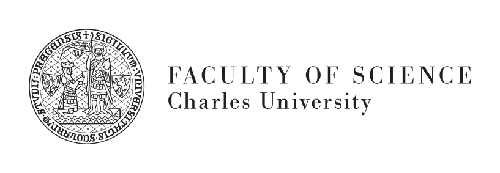
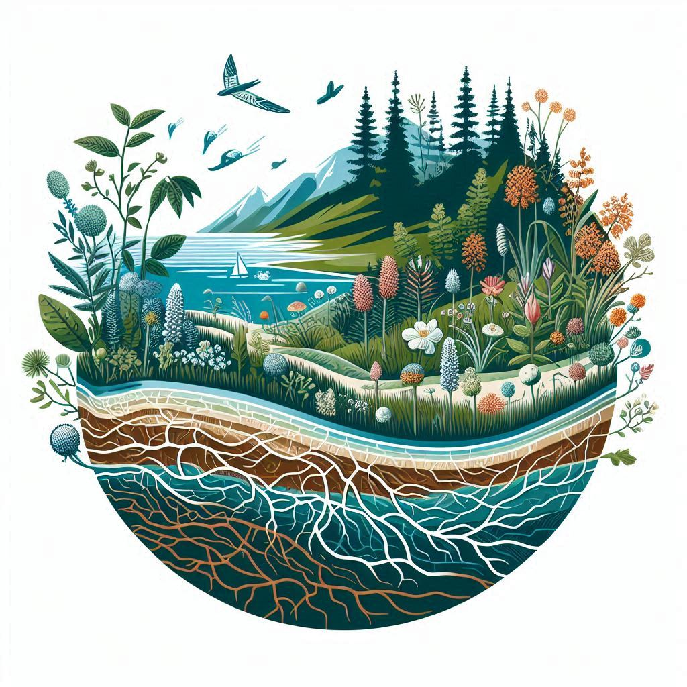

Looking for a new PhD student!
Exploring the Past, Shaping the Future: A full-time PhD position in Functional Vegetation Paleoecology (Prague, 4 years, starting October 2025)
Are you passionate about understanding ecosystem changes using large datasets and advanced modelling techniques? I offer a fully funded, full-time PhD position as part of the Functional Vegetation Paleoecology project, funded by PRIMUS, spanning paleoecology, quantitative ecology, and functional ecology. The candidate will join my Laboratory of Quantitative Ecology at the Department of Botany, Faculty of Science, Charles University in Prague, Czech Republic.
The latest news about the position can be found on the website: [insert link]

About the team
The Laboratory of Quantitative Ecology, led by Ondřej Mottl, is dedicated to advancing quantitative ecology, macroecology, palaeoecology, and community ecology, with a particular focus on data science. Our research integrates global ecological datasets, functional ecology, and interdisciplinary approaches to address pressing challenges in biodiversity conservation, climate change, and human impacts on ecosystems. We are committed to open science, ensuring our work is accessible and reproducible, and we aim to foster an inclusive and collaborative environment that inspires and supports the next generation of ecologists and data scientists.
Project in Detail
Functional Vegetation Paleoecology: Mitigate the impact of climate change with data-driven insight from past vegetation
Anticipating ecosystem changes under global climate change presents a complex challenge that demands interdisciplinary solutions. This project aims to leverage paleoecological vegetation data and functional ecology methods to estimate spatio-temporal variations of functional ecosystem properties beyond the point of human observation, thereby gaining an unprecedented understanding of global vegetation patterns.
The PhD project will focus on integrating global fossil pollen data with modern plant traits to explain ecosystem resilience and vulnerability to past climatic changes. By developing advanced models, this research will address taxonomic uncertainties and provide insights into regions most at risk under future climate scenarios, with a specific focus on assessing ecosystem stability in relation to Planetary Boundaries project. Leveraging cutting-edge advancements in quantitative paleoecological methods and data science, the project will explore ecosystem functionality since the Last Glacial Maximum, spanning various spatial scales from biomes to global.
Through interdisciplinary research, the project aims to push the boundaries of our understanding of historical ecosystem dynamics and contribute essential insights into mitigating the impacts of anthropogenic climate change.

I Offer
- A fully funded, full-time PhD position.
- Full medical insurance and social security.
- Support for settling in a foreign culture and language environment.
- Opportunity to acquire skills in:
- Advanced coding protocols, especially in R.
- Data analysis and statistical modelling.
- Working with large dataset compilations from global databases.
- Tools to foster reproducibility in science (e.g., version control).
- Presentation and communication skills, with the opportunity to present at conferences, congresses, and workshops.
- The financial reward consists of 2 parts
- Salary of 7,000 CZK/month before taxes (approx. 5,500 CZK/month after taxes, which is cca 220 EUR/month as of October 2024)
- Tax-free PhD stipend of 28,000 CZK/month (approx. 1100 EUR/month as of October 2024).
- Access to state-of-the-art scientific and computing equipment, software, journals, and scientific databases.
- Access to my worldwide network of collaborators, with the possibility to participate in related projects.
- Subsidized meals at the university canteen.
- Work in an inspiring academic international environment (the working language is English).
- Working in the hearth of Prague city centre. Prague, renowned for its cultural richness, stands as one of the safest cities globally, with excellent public transport, international accessibility, and healthcare (read more about living in Prague)
I Require
- A master’s or equivalent degree/diploma in a project-related field (e.g., ecology, geography, paleoecology, botany, bioinformatics, biostatistics, environmental sciences). Applicants with degrees in statistics, data science, or computer science are also encouraged to apply.
- Proficiency in spoken and written English.
- Motivation to learn new skills.
- Enthusiasm for team building and collaboration.
Desirable but Not Required:
- Prior experience with programming in R; experience with other languages (Python, C#, etc.) is also welcomed.
- Solid background in data analysis and statistical testing.
- Experiences with large-scale biodiversity patterns
- Good knowledge of Function Ecology (functional traits)
- Experience in an international working environment.
Applications
! The application deadline is the 15th of January 2025 !
Send an email to ‘ondrej.mottl@natur.cuni.cz’ with “PhD application [your surname]” in the email subject, containing:
- Motivation letter (1-2 pages) describing your expertise and research interests, stating why you see yourself as a good fit for my group/team, and why you are interested in obtaining a PhD.
- Your CV highlighting the most relevant information (1-2 pages)
- Contact details for 2-3 academic referees, e.g., your former supervisor, boss, or collaborator.
Note that additional materials such as your theses, manuscripts, diplomas, or certificates may be requested later on, so make sure to prepare all relevant documents in advance.